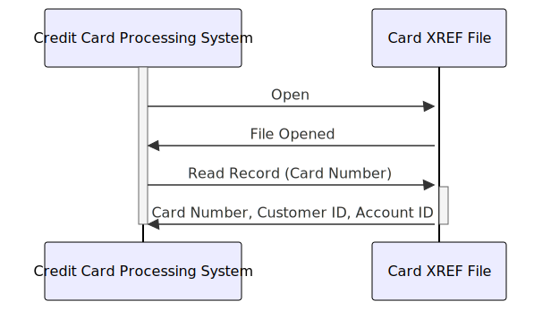

Gerado em: 1 de Outubro de 2024
Título do Documento: Especificação da Estrutura de Dados de Referência Cruzada de Cartão
Descrição Resumida:
Este documento descreve a estrutura de uma estrutura de dados COBOL projetada para armazenar informações de referência cruzada para cartões de crédito. A estrutura vincula um número de cartão de crédito a uma ID de cliente e uma ID de conta, facilitando a recuperação eficiente de dados e garantindo a integridade dos dados em um sistema de gerenciamento de cartão de crédito.
Histórias do Usuário:
Como um sistema que precisa processar transações e recuperar informações do cliente, existe a necessidade de vincular de forma rápida e precisa um número de cartão de crédito ao cliente e conta corretos.
Épico Relacionado: 3 - Gerenciamento de Cartão de Crédito
Requisitos Técnicos:
- Definição da Estrutura de Dados:
- O código define uma estrutura de dados COBOL chamada
CARD-XREF-RECORD.
- Esta estrutura destina-se a representar um único registro em um arquivo ou tabela de referência cruzada.
- Cada registro mapeia um número de cartão de crédito para uma ID de cliente e uma ID de conta.
- Especificações de Campo:
XREF-CARD-NUM:
- Tipo de Dado: Alfanumérico (PIC X)
- Tamanho: 16 caracteres
- Descrição: Armazena o número do cartão de crédito.
XREF-CUST-ID:
- Tipo de Dado: Numérico (PIC 9)
- Tamanho: 9 dígitos
- Descrição: Armazena a ID do cliente associada ao cartão de crédito.
XREF-ACCT-ID:
- Tipo de Dado: Numérico (PIC 9)
- Tamanho: 11 dígitos
- Descrição: Armazena a ID da conta associada ao cartão de crédito.
FILLER:
- Tipo de Dado: Alfanumérico (PIC X)
- Tamanho: 14 caracteres
- Descrição: Espaço não utilizado, potencialmente para expansão futura ou preenchimento.
- Validação de Dados:
- Antes de armazenar dados nesta estrutura, o sistema deve validar:
- Formato do número do cartão de crédito (16 dígitos)
- Existência da ID do cliente no banco de dados de clientes
- Existência da ID da conta no banco de dados de contas
- Recuperação de Dados:
- Esta estrutura facilita a recuperação eficiente de informações do cliente e da conta usando o número do cartão de crédito como chave.
- Integridade de Dados:
- Ao vincular o número do cartão, a ID do cliente e a ID da conta, esta estrutura ajuda a manter a integridade dos dados e garante que as transações sejam atribuídas corretamente.
Modelos Relacionados:
CARD-XREF-RECORD:
XREF-CARD-NUM (String): O número do cartão de crédito.XREF-CUST-ID (Integer): A ID do cliente proprietário do cartão de crédito.XREF-ACCT-ID (Integer): A ID da conta associada ao cartão de crédito.
Configurações:
Melhorias de Código:
- Adicione comentários ao campo
FILLER para esclarecer seu propósito (reservado para uso futuro, alinhamento, etc.).
- Implemente rotinas de validação de dados para garantir a integridade dos dados armazenados nesta estrutura.
- Considere adicionar mecanismos de tratamento de erros para lidar normalmente com cenários onde a validação de dados falha.
Melhorias de Segurança:
- Se os dados armazenados nesta estrutura forem confidenciais, considere implementar mecanismos de criptografia para protegê-los em trânsito e em repouso.
- Implemente medidas de controle de acesso para restringir o acesso não autorizado a esses dados.
Diagrama Conceitual:

–Made by “Smart Engineering” (by Compass.UOL)–